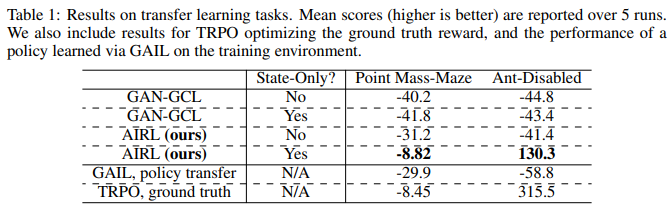
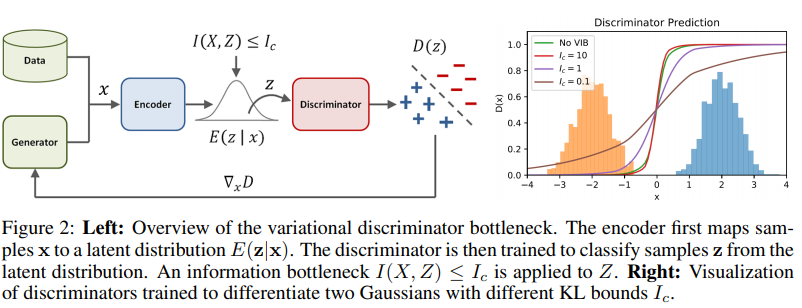

Mauricio Garcia Tec
October 2019
The University of Texas at Austin
In the MaxEnt framework (Todorov, 2008) of RL, the goal is to find a policy π\piπ such that trajectories sampled follow a distribution
p(τ)=1ZexpR(τ)p(\tau) = \frac{1}{Z} \exp R(\tau) p(τ)=Z1expR(τ)
for τ=((s0,a0),...,(sT,aT))\tau=((s_0, a_0), ..., (s_T, a_T))τ=((s0,a0),...,(sT,aT)).
where R(τ):=∑tr(st,at)R(\tau):=\sum_t r(s_t, a_t)R(τ):=∑tr(st,at). The function rrr is assumed to be determinisitic. Conversely, in inverse RL (within MaxEnt framework) we are presented an experts' policy π(e)\pi^{(e)}π(e) and want to solve
maxr Eτ∼p[R(τ)−logZ(r)]\max_{r} \; \mathbb{E}_{\tau \sim p} \left[ R(\tau) - \log Z(r) \right] rmaxEτ∼p[R(τ)−logZ(r)]
Finn, C., Christiano, P., Abbeel, P., & Levine, S. (2016). A connection between generative adversarial networks, inverse reinforcement learning, and energy-based models. In: NeurIPS 2016.
We can interpret it as a maximum likelihood problem
minθ Eτ∼p[−logpθ(τ)]\min_\theta \; \mathbb{E}_{\tau \sim p}\left[ - \log p_\theta(\tau)\right] θminEτ∼p[−logpθ(τ)]
where pθ(τ)=1Zexp(−cθ(τ))p_\theta(\tau)=\frac{1}{Z}\exp(-c_\theta(\tau))pθ(τ)=Z1exp(−cθ(τ)) is parametrized by the Boltzmann distribution.
Typical problem with Boltzmann distribution is estimating the partition function ZZZ. Let cθ(τ)c_\theta(\tau)cθ(τ) be the energy cost function (think of a negative reward). And assume we can sample from another policy with known density π\piπ. Then
Z=∫exp(−cθ(τ))dτ=∫exp(−cθ(τ))μ(τ)μ(τ)dτ=Eτ∼μ[exp(−cθ(τ))μ(τ)]Z= \int \exp(-c_\theta(\tau)) d\tau=\int \exp(-c_\theta(\tau))\frac{\mu(\tau)}{\mu(\tau)} d\tau = \mathbb{E}_{\tau \sim \mu} \left[ \frac{\exp(-c_\theta(\tau))}{\mu(\tau)} \right] Z=∫exp(−cθ(τ))dτ=∫exp(−cθ(τ))μ(τ)μ(τ)dτ=Eτ∼μ[μ(τ)exp(−cθ(τ))]
Then we have a loss function for the parameters θ\thetaθ:
LIRL(θ)=Eτ∼p[−logpθ(τ)]=Eτ∼p[cθ(τ)]+logZ=Eτ∼p[cθ(τ)]+logEτ∼μ[exp(−cθ(τ))μ(τ)]\begin{aligned} \mathcal{L}_\text{IRL}(\theta) & = \mathbb{E}_{\tau\sim p}[-\log p_\theta(\tau)] \\ & = \mathbb{E}_{\tau \sim p}[c_\theta(\tau)] + \log Z \\ & = \mathbb{E}_{\tau \sim p}[c_\theta(\tau)] + \log \mathbb{E}_{\tau \sim \mu} \left[ \frac{\exp(-c_\theta(\tau))}{\mu(\tau)} \right] \end{aligned} LIRL(θ)=Eτ∼p[−logpθ(τ)]=Eτ∼p[cθ(τ)]+logZ=Eτ∼p[cθ(τ)]+logEτ∼μ[μ(τ)exp(−cθ(τ))]
The optimal importance sampling for this function is precisely proportional to ppp [discussion]. We can train any μ\muμ to be as close as possible but with a regularization entropy term
Lsampler(μ)=Eτ∼μ[cθ(τ)]+Eτ∼μ[logq(τ)]\mathcal{L}_\text{sampler}(\mu) = \mathbb{E}_{\tau \sim \mu}[c_\theta(\tau)] + \mathbb{E}_{\tau \sim \mu} [\log q(\tau)] Lsampler(μ)=Eτ∼μ[cθ(τ)]+Eτ∼μ[logq(τ)]
We now take a look at cost-guided GANs and explore the connection.
For a true data distribution ppp and generator distribution π\piπ the discriminator's objective in GAN is
Ldiscriminator(Dθ)=Eτ∼p[−logDθ(τ)]+Eτ∼π[−log(1−Dθ(τ))]\mathcal{L}_\text{discriminator}(D_\theta) = \mathbb{E}_{\tau \sim p} [-\log D_\theta(\tau)] + \mathbb{E}_{\tau \sim \pi} [ -\log(1 - D_\theta(\tau))] Ldiscriminator(Dθ)=Eτ∼p[−logDθ(τ)]+Eτ∼π[−log(1−Dθ(τ))]
And the generator objective is
Lgenerator(π)=Eτ∼π[−logDθ(τ)]+Eτ∼π[log(1−Dθ(τ))]\mathcal{L}_\text{generator}(\pi) = \mathbb{E}_{\tau \sim \pi} [-\log D_\theta(\tau)] + \mathbb{E}_{\tau \sim \pi} [ \log(1 - D_\theta(\tau))] Lgenerator(π)=Eτ∼π[−logDθ(τ)]+Eτ∼π[log(1−Dθ(τ))]
For a fixed generator with π(τ)\pi(\tau)π(τ), the optimal discriminator is
D∗(τ)=p(τ)p(τ)+π(τ)D^*(\tau) = \frac{p(\tau)}{p(\tau) + \pi(\tau)} D∗(τ)=p(τ)+π(τ)p(τ)
where p(τ)p(\tau)p(τ) is the actual distribution of the data.
Moreover, the global minumum of D∗(τ)D_*(\tau)D∗(τ) is obtained when π≡p\pi \equiv pπ≡p, at which the discriminator gives equal probability to fake and generated data.
When the density of π\piπ can be evaluated, GAN can be modified to estimate ppp
Dθ(τ)=pθ(τ)pθ(τ)+π(τ)=1Zexp(−cθ(τ))1Zexp(−cθ(τ))+π(τ)D_\theta(\tau) = \frac{p_\theta(\tau)}{p_\theta(\tau) + \pi(\tau)} = \frac{\frac{1}{Z}\exp(-c_\theta(\tau))}{\frac{1}{Z}\exp(-c_\theta(\tau)) + \pi(\tau)} Dθ(τ)=pθ(τ)+π(τ)pθ(τ)=Z1exp(−cθ(τ))+π(τ)Z1exp(−cθ(τ))
at optimality, pθ(τ)=1Zexp(−cθ(τ))=p(τ)p_\theta(\tau)=\frac{1}{Z}\exp(-c_\theta(\tau)) = p(\tau)pθ(τ)=Z1exp(−cθ(τ))=p(τ).
Here is another trick. Let μ\muμ be a mixture of the data and policy samples μ(τ)=12(p(τ)+π(τ))\mu(\tau) = \frac{1}{2}(p(\tau) + \pi(\tau))μ(τ)=21(p(τ)+π(τ)). This μ\muμ can be used for the importance sampling estimate:
The authors prove three key results:
Fu, J., Luo, K., & Levine, S. (2018). Learning Robust Rewards with Adverserial Inverse Reinforcement Learning. In: ICLR.
The GAN-GCL of Finn et al. (2016) is trajectory-centric, which gives in high-variance estimates and results in very poor learning.
The goal will be to be able to learn rewards for each state-action pair instead. The problem to solve is reward entanglement.
Obvious idea is to use GAN-GCL at the state-action level using a discriminator of the form
Dθ(s,a)=exp(fθ(s,a))exp(fθ(s,a))+π(a∣s)D_\theta(s, a) = \frac{\exp(f_\theta(s, a))}{\exp(f_\theta(s, a)) + \pi(a\mid s)} Dθ(s,a)=exp(fθ(s,a))+π(a∣s)exp(fθ(s,a))
Take a look at the generator's loss
r^θ(s,a):=−logDθ(s,a)+log(1−Dθ(s,a))=−logexp(fθ(s,a))exp(fθ(s,a))+π(a∣s)+logπ(a∣s)exp(fθ(s,a))+π(a∣s)=−fθ(s,a)+log(π(a∣s))\begin{aligned} \hat{r}_\theta(s,a)&:= - \log D_\theta(s,a) + \log(1 - D_\theta(s,a)) \\ &= - \log \frac{\exp(f_\theta(s, a))}{\exp(f_\theta(s, a)) + \pi(a\mid s)} + \log\frac{\pi(a\mid s)}{\exp(f_\theta(s, a)) + \pi(a\mid s)} \\ &= -f_\theta(s,a) + \log(\pi( a\mid s)) \end{aligned} r^θ(s,a):=−logDθ(s,a)+log(1−Dθ(s,a))=−logexp(fθ(s,a))+π(a∣s)exp(fθ(s,a))+logexp(fθ(s,a))+π(a∣s)π(a∣s)=−fθ(s,a)+log(π(a∣s))
When adding over trajectories, we obtain the generator's objective
Lgenerator(π)=Eπ[∑t=0T(fθ(st,at)−logπ(at∣st))]\mathcal{L}_\text{generator}(\pi) = \mathbb{E}_\pi\left[\sum_{t=0}^T \left(f_\theta(s_t, a_t) - \log\pi(a_t \mid s_t)\right)\right] Lgenerator(π)=Eπ[t=0∑T(fθ(st,at)−logπ(at∣st))]
which is an entropy regularized policy method.
Suppose we learn a reward function r(s,a,s′)r(s, a, s')r(s,a,s′). Then for any Φ:S→R\Phi:\mathcal{S} \to \mathbb{R}Φ:S→R a reward function r^(s,a,s′)=r(s,a,s′)+Φ(s′)−Φ(s)\hat{r}(s,a,s') = r(s,a,s') + \Phi(s') - \Phi(s)r^(s,a,s′)=r(s,a,s′)+Φ(s′)−Φ(s) leads to the same optimal policy. The term Φ(s′)−Φ(s)\Phi(s') - \Phi(s)Φ(s′)−Φ(s) is also called the shaping term.
The actors argue that having a shaped reward function is not good. Because it will not be robust to changes in dynamics. Why?
The reward of a policy should ideally not depend on the environments transition function. But with an entangled reward it does. Why?
Example. Assume deterministic dynamics and T(s,a)T(s,a)T(s,a) the transition function. Then given a different T′T'T′
r(s,a)+Φ(T(s,a))≠r(s,a)+Φ(T′(s,a))r(s,a) + \Phi(T(s,a)) \neq r(s,a) + \Phi(T'(s,a)) r(s,a)+Φ(T(s,a))=r(s,a)+Φ(T′(s,a))
The authors prove two interesting results
Since with the proposed methods one cannot learn a function of sss only (Why?). The authors proposed the following change to the discriminator
Dθ,ϕ(s,a,s′)=exp{fθ,ϕ(s,a,s′)}fθ,ϕ(s,a,s′)+π(a∣s)D_{\theta, \phi}(s,a,s') = \frac{\exp\{f_{\theta, \phi}(s,a,s')\}}{f_{\theta, \phi}(s,a,s') + \pi(a\mid s)} Dθ,ϕ(s,a,s′)=fθ,ϕ(s,a,s′)+π(a∣s)exp{fθ,ϕ(s,a,s′)}
where
fθ,ϕ(s,a,s′)=gθ(s,a)+hϕ(s′)−hϕ(s)f_{\theta, \phi}(s,a,s') = g_\theta(s,a) + h_\phi(s') - h_\phi(s) fθ,ϕ(s,a,s′)=gθ(s,a)+hϕ(s′)−hϕ(s)
BONUS. Can parametrize gθ=gθ(s)g_\theta=g_\theta(s)gθ=gθ(s) as a function of the state only which according to theorems should be better.
The shaping term hϕh_\phihϕ has the role of helping mitigate unwanted shaping effects. The authors show that under deterministic dynamics and a ground-truth state-only function
hϕ↦V∗(s)h_\phi \mapsto V^*(s) hϕ↦V∗(s)
where V∗(s)V^*(s)V∗(s) is the value function. Therefore
f∗(s,a)={r∗(s)+V∗(T(s,a))}−V∗(s)=Q∗(s,a)−V∗(s)\begin{aligned} f^*(s,a) &= \left\{r^*(s) + V^*(T(s,a))\right\} - V^*(s)\\ &= Q^*(s,a) - V^*(s) \end{aligned} f∗(s,a)={r∗(s)+V∗(T(s,a))}−V∗(s)=Q∗(s,a)−V∗(s)
which is the advantage function.

source: original paper
Peng, X. B., Kanazawa, A., Toyer, S., Abbeel, P., & Levine, S. (2019). Variational discriminator bottleneck: Improving imitation learning, inverse rl, and gans by constraining information flow. In: ICLR.

Introduce stochastic encoders qg(zg∣s)q_g(z_g \mid s)qg(zg∣s), qh(zh∣s)q_h(z_h \mid s)qh(zh∣s) and replace each element in the discriminator with variational encoded versions
So the new discriminator is
D(s,a,z)=expfθ,ϕ(zg,zh,zh′)expfθ,ϕ(zg,zh,zh′)+π(a∣s)D(s,a,z) = \frac{\exp{f_{\theta,\phi}(z_g,z_h,z_h')}}{\exp f_{\theta,\phi}(z_g,z_h,z_h') + \pi(a\mid s)} D(s,a,z)=expfθ,ϕ(zg,zh,zh′)+π(a∣s)expfθ,ϕ(zg,zh,zh′)
with fθ,ϕ(zg,zh,zh′)=gϕ(zg)+hϕ(zh′)−hϕ(zh)f_{\theta,\phi}(z_g,z_h,z_h')=g_\phi(z_g) + h_\phi(z_h') - h_\phi(z_h)fθ,ϕ(zg,zh,zh′)=gϕ(zg)+hϕ(zh′)−hϕ(zh).
A quick detour... The information bottleneck problem is a constrained optimization problem. Given:
The Information bottleneck problem is
minθ EZ∼q(Z∣X)[lθ(Z)]s.t. I(X,Z)≤IC\begin{aligned} \min_\theta \;\;&\mathbb{E}_{Z \sim q(Z\mid X)}[l_\theta(Z)] \\ \text{s.t.} \;\;& I(X, Z) \leq I_C \end{aligned} θmins.t.EZ∼q(Z∣X)[lθ(Z)]I(X,Z)≤IC
Since mutual information is hard we use variational lower bound
I(X,Z)=∫p(x,z)logp(x,z)p(x)p(z)dxdz≤EX∼p(X)[KL[q(Z∣X) ∥ r(Z)]]I(X, Z) = \int p(x,z)\log\frac{p(x, z)}{p(x)p(z)}dxdz \leq E_{X \sim p(X)}[KL[q(Z\mid X) \,\Vert\, r(Z)]] I(X,Z)=∫p(x,z)logp(x)p(z)p(x,z)dxdz≤EX∼p(X)[KL[q(Z∣X)∥r(Z)]]
where r(Z)r(Z)r(Z) is any (good) approximation to the marginal p(Z)p(Z)p(Z).
Want demonstration? Key: KL[p(Z) ∥ r(Z)]≥0KL[p(Z)\,\Vert\,r(Z)] \geq 0KL[p(Z)∥r(Z)]≥0
With the information bottleneck approach, the new discriminator will be
Ldiscriminator(θ,ϕ)=minθ,ϕ,(β≥0)Es,s′∼p[Ez∼q(z∣s,s′)[−logDθ,ϕ(s,a,z)]]+Es,s′∼π[Ez∼q(z∣s,s′)[−log(1−Dθ,ϕ(s,a,z))]]+β[Ic−Es,s′∼μ[KL[q(z∣s,s′) ∥ r(z)]].\begin{aligned} \mathcal{L}_\text{discriminator}(\theta,\phi) &= \min_{\theta, \phi, (\beta \geq 0)} \mathbb{E}_{s,s'\sim p}\left[ \mathbb{E}_{z\sim q(z\mid s,s')} \left[ -\log D_{\theta,\phi}(s,a,z) \right] \right] \\ & \quad\quad + \mathbb{E}_{s,s'\sim \pi}\left[ \mathbb{E}_{z\sim q(z\mid s,s')} \left[ -\log (1 - D_{\theta,\phi}(s,a,z)) \right] \right] \\ & \quad\quad + \beta \left[I_c - \mathbb{E}_{s,s'\sim \mu}[\mathrm{KL}[q(z\mid s, s') \,\Vert\,r(z) ] \right]. \end{aligned} Ldiscriminator(θ,ϕ)=θ,ϕ,(β≥0)minEs,s′∼p[Ez∼q(z∣s,s′)[−logDθ,ϕ(s,a,z)]]+Es,s′∼π[Ez∼q(z∣s,s′)[−log(1−Dθ,ϕ(s,a,z))]]+β[Ic−Es,s′∼μ[KL[q(z∣s,s′)∥r(z)]].
where qqq is the joint variational distribution q(zg,zh∣s)=qg(zg∣s)qh(zh∣s)q(z_g,z_h\mid s)=q_g(z_g \mid s)q_h(z_h\mid s)q(zg,zh∣s)=qg(zg∣s)qh(zh∣s).
We will explain the term the bottleneck term.
Finn, C., Christiano, P., Abbeel, P., & Levine, S. (2016). A connection between generative adversarial networks, inverse reinforcement learning, and energy-based models. In: NeurIPS.
Goodfellow, I., Pouget-Abadie, J., Mirza, M., Xu, B., Warde-Farley, D., Ozair, S., & Bengio, Y. (2014). Generative adversarial nets. In: NeurIPS.